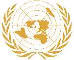

Brak podatkow ✓
Brak wieku emerytalnego ✓
Brak ubezpieczen zdrowotnych ✓
Podstawowy dochod osobisty ✓
Mieszkania socjalne ✓
Darmowa energia ✓
Darmowa lacznosc ✓
Darmowa woda ✓
Darmowa komunikacja miejska ✓
Waluta:
Pieniadz jest jednostka do umozliwiania wymiany towarow i uslug w spoleczenstwie, oraz tworzenia zycia na danym obszarze.
Wartosc pieniadza nie jest skorelowana z jego iloscia a skutecznoscia wykorzystania jego obiegu do pokrycia potrzeb wlasnych i wytworzenia wartosci na eksport.
Panstwo nie jest biznesem, ale w panstwie musza byc biznesy i to wlasnie ich kondycja tworzy wartosc waluty.
Spoleczenstwo:
Podniesienie standardow spolecznych i srodowiskowych do najwyzszych mozliwych calkowicie zmieni nastawienie i poziom zycia calego spoleczenstwa.
To ulatwi utworzenie prawdziwej, wysoce rozwinietej cywilizacji,, gdzie wszystko,jest mozliwe i kazdy moze realizowac swoje pasje.
System to jedynie zbior regul, ktore maja umozliwic i ulatwic dalszy rozwoj i istnienie w swiecie, na poziomie, ktory sami wybieramy.
System finansowy:
Zmiany w systemie finansowym sa niezbedne i kluczowe dla utworzenia wlasciwej formy systemu spolecznego.
Podstawowy dochod osobisty stanowi pierwszy z wielu waznych krokow, ktore spoleczenstwo odczuje.
W pelni funkcjonalny system pieniezny pelni swoje teoretyczne zalozenia, stajac sie narzedziem do wymiany dobr i uslug w spoleczenstwie oraz kreowanie zycia na danym obszarze.
Rzad pelni role emitenta i dystrybutora pieniadza w taki sposob, aby efektywnie gospodarowac zasobami materialnymi, srodowiskowymi i spolecznymi w dlugoterminowej perspektywie.
Zmiany te przynosza korzysci wszystkim grupom spolecznym, zarowno producentom, jak i konsumentom dobr i uslug.
Podatki:
Podatki pobierane sa tylko od zagranicznych podmiotow na terenie kraju, wedlug obliczen urzedu podatkowego
Rzad pelni role emitenta i dystrybutora pieniadza, co eliminuje potrzebe pobierania jakichkolwiek podatkow od obywateli kraju i od krajowych podmiotow.
To znacznie upraszcza relacje miedzy podmiotami gospodarczymi oraz spoleczenstwem a Rzadem.
Jednoczesnie pozwala to Rzadowi skoncentrowac sie na prowadzeniu swojej wlasciwej funkcji, czyli kierowaniu prawidlowym rozwojem i podnoszeniu standardow zycia,
aby spoleczenstwo moglo rozwijac sie i istniec w najlepszej mozliwej formie, dbajac jednoczesnie o bezpieczenstwo i srodowisko.
Rzad emituje dodatek dochodowy, ktory sluzy do katalogowania podazy i popytu towarow i uslug dla celow rynkowych oraz wspierania rozwijajacych sie kierunkow.
Dodatek dochodowy przysluguje jedynie od wypracowanego dochodu z zarejestrowanych podmiotow krajowych.
Bezpieczenstwo:
Dobrze zaprojektowany system spoleczny eliminuje ponad 90% przestepczosci, co znaczaco podnosi poczucie bezpieczenstwa.
Odpowiednie prawo i wysoki poziom sluzb gwarantuja bezpieczenstwo w 100%.
Mozliwosci:
Rzad, nieograniczony w swoich dzialaniach, moze tworzyc i wspierac nowe kierunki we wszystkich dziedzinach, co przyczynia sie do powstawania wielu spolecznie i gospodarczo uzytecznych miejsc.
Wiecej czasu i wieksza swoboda w bezpiecznym i przyjaznym srodowisku tworza wiele mozliwosci zarowno dla jednostki,
jak i dla calego spoleczenstwa, co przyczynia sie do zwiekszenia rozwoju jednostki oraz spoleczenstwa jako calosci.
Podstawowe struktury istnienia Panstwa w calosci musza podlegac wlasnosci Panstwa i byc nieodplatne dla obywateli.
Struktury: mieszkanie socjalne, komunikacja miejska, ochrona prawna, ochrona zdrowia.
Media: Energia, lacznosc, woda, uslugi komunalne w tym smieci ( w podstawowym wymiarze sredniego zuzycia gospodarstwa domowego wzgledem wydajnosci struktury ).
Takie rozwiazanie minimializuje ilosc niepotrzebnych zajec, podnoszac wydajnosc poprzez automatyzacje i globalizacje.
Globalizacja:
Globalizacja panstwowa, czyli rozwoj i tworzenie firm panstwowych aby w pelni pokryc wszystkie potrzeby panstwa oraz wytworzyc wartosc na eksport.
Produkt koncowy jako najwyzej oprocentowany zyskiem umozliwi uzyskania korzystnej wymiany z innymi krajami, co zwiekszy mozliwosci importowe i produkcyjne.
Dlugofalowe, odpowiednie zarzadzanie zasobami naturalnymi stanowi istotny czynnik minimalizujacy negatywne skutki rynkowe, takie jak
kreowanie niepotrzebnych zajec, produktow o obnizonej jakosci i trwalosci, produkcja odpadow, degradacji srodowiska czy brakow rynkowych.
Wyzsze standardy jakosci wplyna pozytywnie na zdrowie przez zmniejszanie skutkow negatywnych
powstajacych zarowno z powodu degradacji srodowiska jak, standardu produktow, zywnosci i samego trybu zycia.
Podstawowy dochod osobisty:
Podstawowy dochod osobisty - od osiagniecia pelnoletnosci kazdy otrzymuje bezwarunkowy dochod osobisty w kwocie zapewniajacej utrzymanie na obecnym poziomie minimum socjalnego
zwiekszany w miare automatyzacji i globalizacji w kraju, co za tym idzie mniejsza iloscia pracy niezbednej do wykonania, aby pokryc wszelkie zapotrzebowanie rynkowe i spoleczne.
Dochod podstawowy dla osob w przedziale 0-18 przekazywany jest na konto rodzicow lub prawnych opiekunow. Takie rozwiazanie zwieksza standard zycia w spoleczenstwie
stabilizuje rynek, podnosi bezpieczenstwo przez wyeliminowanie podstawowych przyczyn rozwoju przestepczosci spolecznej, gospodarczej i srodowiskowej.
Dodatek dochodowy przynajmniej w poczatkowym etapie pokrywa uslugi i produkty krajowych podmiotow dla zabezpieczenia kursu waluty i rozwoju lokalnego rynku.
Wynagrodzenie/Dochod:
Wynagrodzenie/dochod - Pelny dochod obliczany jest z 3 podstawowych wartosci:
1 Pierwsza wartosc produktu/uslugi wyliczona ze stosunku kosztu i zysku na zasadach obowiazujacych obecnie, umniejszone o opodatkowanie ktore zanika.
I dwie wartosci dodatkowe dodawane przez Rzad do rozliczenia podstawowego z biezacego okresu rozliczeniowego.
2 Druga wartosc dodana jest to dodatek dochodowy, ktory jest narzedziem do katalogowania podazy rynkowej
i wyliczany na podstawie stosunku podazy wykonanej pracy ( czytaj: zarobku ), do ilosci ludzi otrzymujacych
podstawowy dochod osobisty z biezacego okresu rozliczeniowego.
Wartosc ta jest wynagrodzeniem za prace i wnoszenie wartosci do spoleczenstwa i jest odzwierciedleniem przydatnosci spolecznej produktu/uslugi.
Wartosc ta moze byc karnie wstrzymana w przypadku naruszenia przez podmiot przepisow ustaw gospodarczych, srodowiskowych i spolecznych.
3 Trzecia wartosc jest wyliczana wewnetrznie przez organy rzadowe na podstawie oceny zapotrzebowania i jakosci.
Podstawowa wartosc to 0 i przyznawana jest dowolnie i bez ograniczen przez organy rzadowe wybranym podmiotom wzgledem oceny odpowiednich urzedow.
Jest to narzedzie do sterowania podaza wzgledem popytu towarow i uslug. Takie rozwiazanie pomaga sterowac rozwojem gospodarczym w kraju, aby w pelni pokryc wszystkie potrzeby panstwa.
Wykaz wzorcowych rozliczen II skladnika dochodu w formie dodatku do dochodu w stosunku do wzorcowych zarobkow i innej liczby mieszkancow uprawnionych do podstawowego dochodu osobistego.
Maksymalna wysokosc zasilku jest ustalana corocznie przez dzial finansowy.
Po przekroczeniu wartosci wsparcia dla podmiotow rozwijajacych sie naliczany jest dodatek procentowy w standardowej wartosci 0,1 punktu procentowego, ktory rowniez ustala dzial finansowy.
Wzor na obliczenie procentowej wartosci dodatku do dochodu:
Zarobki/Liczba pobierajacych dochod * Mnoznik (A/B*C=D ) oraz D*A=IS
Jak obliczyc progresywny dodatek dochodowy
IS - naliczony dodatek do dochodu
ISV- wartosc dodatku do dochodu regulowana przez dzial finansowy (100.000)
A - Zarobek
B - Liczba odbiorcow podstawowego dochodu
C - Mnoznik = 100.000
D- % wskaznika IS
S - Stawka osiagniecia IVS
0,1% - Standardowa wartosc dodatku do dochodu
(A/B*C=D ) S= X*D=ISV
Przyklad (IS
Zarobki/Liczba odbiorcow dochodow /* Mnoznik ( A/B*C=D) D*A=IS
1000zl/30MLN * 100000 = 3,33% 3,33% * 1000$ = IS(33,30) = 1033,30$
JEZELI (IS) < (ISV) = 100%A*D
Przyklad (IS>IVS):
JESLI (IS) > (IVS) to IS=IVS+(A-S*01%)
100,000 /30 MLN * 100,000 = 333,33% 100,000*333,33% = 333,330 (IS>IVS )
JESLI (IS) > (IVS) to IS=IVS+(A-S*01%)
S=X*D=IVS
S= X*333,33%=100 000= IVS/D=X = 30 000,3
S = 30.000,3
IS=IVS+ (A-S*0,1%)
IS = 100 000 + (100 000-30 000,3*0,1%)
IS = 100 000 + (69 999,7*0,1%=69,9997)
IS = 100 070
Zastosowanie progresywnego rozliczenia dodatku dochodowego zachowuje wszystkie najwazniejsze cechy wolnego rynku.
Wspiera rozwijajace sie kierunki i podmioty, zacheca do pracy, jednoczesnie trzyma odpowiednia korelacje kosztow, wartosci produktu/uslugi i pieniadza na rynku do wielkosci spoleczenstwa.
Takie rozwiazanie daje rzadowi pelna wladze nad sterowaniem rozwojem gospodarczym, aby pokryc wszelkie zapotrzebowanie panstwa.
Manipulowanie wartoscia maksymalna dodatku dochodowego i podstawowym dochodem osobistym daje pelna mozliwosc kontroli rynku
w polaczeniu z balansujaca sie wielkoscia dodatku wzgledem wartosci pracy i wielkosci spoleczenstwa stwarza samonapedzajace sie narzedzie do kreowania
wspierania i kontroli rynkow wiec i rozwoju spoleczno gospodarczego.
AKTYWNA DEMOKRACJA:
Demokracja aktywna to jedyny system demokratyczny dajacy prawdziwy wplyw spoleczenstwa na jakosc zarzadzania i wybieranie
jak i zwalnianie obsadzonych urzednikow na stanowiskach w dowolnym czasie bez okreslonego terminu wyborow.
Odbywa sie to przez zbieranie glosow sprzeciwu w trybie ciaglym zarowno online, jak i w wyznaczonych urzedach dla odpowiadajacego obszaru.
Po przekroczeniu okreslonego progu niezadowolenia dla odpowiadajacego obszaru, oglaszane sa nowe wybory
w ktorych trakcie publicznie rozpatrywane sa glosy sprzeciwu, a takze nowe kandydatury.
Wartosc procentowa obliczana jest dla kazdego rodzaju stanowiska procentowo z podlegajacego obszaru wzgledem ilosci uprawnionych do glosowania.
Dla funkcji powiatowych z calego powiatu i krajowych z calego kraju. Po przekroczeniu okreslonego progu 30% rozpoczyna sie proces analizy, gdzie obecny kandydat
moze w sposob odpowiedni wyjasnic swoje decyzje i prezentowac dalszy przebieg kandydatury, jak i rozpoczyna sie proces kampanii nowych kandydatow.
Termin wyborow ustalany jest w okresie nie dalej niz pol roku po przekroczeniu wyznaczonego progu.
Najwieksze zalety tego rozwiazania to:
Bezposredni wplyw spoleczenstwa na obsade stanowisk urzedowych (czytaj: prawdziwa demokracja)
Mozliwosc skupienia obecnych urzednikow tylko i wylacznie na czynnosciach, jakich wymaga ich funkcja bez niepotrzebnych przerw na prowadzenie kampanii, gdy nie jest ona potrzebna.
W pelni jawne i czytelne wybory zarowno droga elektroniczna, jak i w wyznaczonych urzedach dla odpowiadajacego obszaru.
STRUKTORA I DZIALANIE RZADU:
Facebook
Twitter
Youtube
Telegram: t.me/realnapolityka
Drajer Piotr +44 07397059005
partiaprzyszlosci@gmail.com
British Pound account
Beneficiary
Piotr Drajer
Sort Code
04-00-75
Account number
71731105
IBAN
GB15 REVO 0099 7090 2185 36
BIC / SWIFT code
REVOGB21
Correspondent BIC
CHASGB2L
Bank Name and Address
Revolut Ltd
7 Westferry Circus, E14 4HD, London, United Kingdom